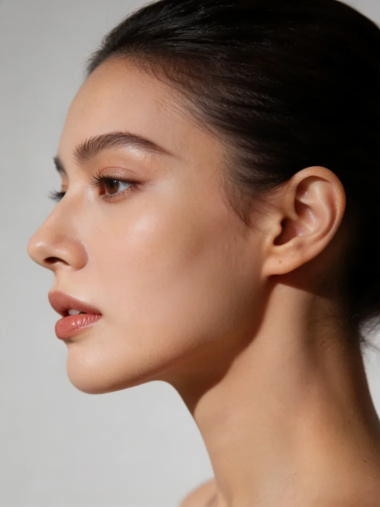

Recomandat
HIFU · O zonă mică
290lei
de la · per ședință
Programează →

Față · Contur & gușă
Gușă, bărbie dublă sau o linie a mandibulei care s-a estompat? Reducem depozitul și redefinim conturul prin HIFU, RF Sculpt și radiofrecvență, fără operație, fără recuperare.
De ce apare gușa

Gușa și bărbia dublă apar dintr-un mix de grăsime localizată și piele relaxată sub bărbie, uneori indiferent de greutate, din cauza geneticii, vârstei sau pierderii de fermitate. Sportul singur rareori rezolvă această zonă.
Combinăm două direcții: HIFU pentru lifting și fermitate în profunzime și RF Sculpt pentru remodelarea și definirea conturului mandibular, pentru un profil mai clar și mai tânăr.
Cum funcționează HIFU pe gușă
Tratamente recomandate
Adesea combinăm 2 tehnologii pentru cel mai bun rezultat. Planul exact îl stabilim la consultația gratuită. Mai jos, opțiunile cel mai des recomandate (preț de pornire).
Cum decurge
O cură scurtă, cu rezultat care se construiește pe măsură ce se formează colagen nou.
Analiză contur + plan
Evaluăm raportul grăsime/laxitate și alegem combinația HIFU + RF Sculpt potrivită. Gratuit.
HIFU pentru lifting
4-6 ședințe pentru remodelarea conturului
Contur vizibil mai definit
bărbie dublă redusă*Ajustăm dacă mai e nevoie de o ședință
O ședință la 9-12 luni
Menținem conturul; ritmul îl ajustăm în funcție de tine.
*În majoritatea cazurilor. Rezultatele variază în funcție de raportul grăsime/piele, vârstă și stilul de viață.
Întrebări frecvente
Ce spun clientele
5,0 / 5
★★★★★ · 300+ recenzii Google
Primul pas e gratuit